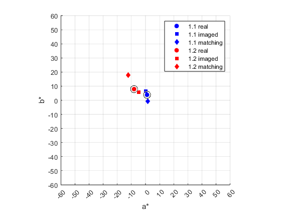

Project 4 Report
Team 5: Shakira Garnett, Hridiza Roy
Contents
Initialization
clear all; close all; clc; % load the CIE observer and illuminant data cie = loadCIEdata;
Step 2
Include a listing of the ref2XYZ function
function XYZ = ref2XYZ(ref,cmfs,ill); % simple version of ref2XYZ that doesn't use matrix mults %compute normalizing constant for the illuminant k = 100./sum(cmfs(:,2).*ill); %compute the XYZs X = k.*sum(cmfs(:,1).*ill.*ref); Y = k.*sum(cmfs(:,2).*ill.*ref); Z = k.*sum(cmfs(:,3).*ill.*ref); % return them in a 3xn array XYZ = [X;Y;Z]; end
Step 3
Test ref2XYZ function
CC_spectra = load('ColorChecker_380-780-5nm.txt');
CC_XYZs = ref2XYZ(CC_spectra(:, 2:25), cie.cmf2deg, cie.illD65)
CC_XYZs =
Columns 1 through 7
11.5145 39.1346 18.3488 11.1492 25.8437 31.7110 37.1457
10.3819 36.5981 19.6332 13.8551 24.3868 43.8600 29.5592
7.1502 27.0564 35.6470 7.4267 45.6142 44.8778 6.5006
Columns 8 through 14
13.8627 29.1328 8.5889 33.9174 46.1864 8.9183 15.0353
12.3179 19.8475 6.4569 44.1533 42.4957 6.4177 24.1079
39.3093 14.9941 15.4745 11.4297 8.6771 32.2736 9.6379
Columns 15 through 21
19.3447 55.8457 29.6768 14.4138 87.8402 57.9621 35.2286
11.3576 58.9726 19.3515 19.9750 92.3781 61.0426 37.0414
5.5526 9.6411 32.2626 39.0008 95.6125 65.4909 40.2256
Columns 22 through 24
19.3492 8.7646 3.2111
20.4708 9.2915 3.3763
22.1545 10.3188 3.9312
Step 4
Create XYZ2Lab function
function Lab = XYZ2Lab(XYZ, XYZn) % Split the matrix into corresponding row vectors X = XYZ(1,:,:); Y = XYZ(2,:,:); Z = XYZ(3,:,:); X_n = XYZn(1,:,:); Y_n = XYZn(2,:,:); Z_n = XYZn(3,:,:); % calculate chromaticitity coords Y_ratio = Y ./ Y_n; L = 116 * ((Y_ratio > 0.008856) .* Y_ratio.^(1/3) + (Y_ratio <= 0.008856) ... .* (7.787 * Y_ratio + (16/116))) - 16; % a calculation X_ratio = X ./ X_n; a = 500 * (((X_ratio > 0.008856) .* X_ratio.^(1/3) + (X_ratio <= 0.008856) ... .* (7.787 * X_ratio)) - ((Y_ratio > 0.008856) .* Y_ratio.^(1/3) + ... (Y_ratio <= 0.008856) .* (7.787 * Y_ratio))); % b calculation Z_ratio = Z ./ Z_n; b = 200 * (((Y_ratio > 0.008856) .* Y_ratio.^(1/3) + (Y_ratio <= 0.008856) ... .* (7.787 * Y_ratio)) - ((Z_ratio > 0.008856) .* Z_ratio.^(1/3) + ... (Z_ratio <= 0.008856) .* (7.787 * Z_ratio))); % reconstruct & return LAB matrix Lab = [L;a;b]; end
Step 6
Test XYZ2Lab function
% compute the XYZ values for XYZ in XYZ2Lab CC_spectra = load('ColorChecker_380-780-5nm.txt'); CC_XYZs = ref2XYZ(0.02 * CC_spectra(:,2:25),cie.cmf2deg,cie.illD65); % compute the XYZ values of D65 for XYZn in XYZ2Lab XYZn_D65 = ref2XYZ(cie.PRD,cie.cmf2deg,cie.illD65); % calculate the Lab values CC_Labs = XYZ2Lab(CC_XYZs, XYZn_D65); % read in the names of the ColorChecker patches names = textread('ColorChecker_names.txt','%s','delimiter','|'); % print the formatted table % header fprintf("\nColorChecker XYZ and Lab values (D65 illuminant and 2 deg. observer)\n\n"); fprintf("Patch #\t X\t Y\t Z\t L*\t a*\t b*\t Patch Name\n"); % loop to print the patch values for i=1:size(CC_Labs,2) fprintf("%7d\t %6.3f\t%6.3f\t%6.3f\t%6.3f\t%6.3f\t%6.3f\t %s\n", i, ... CC_XYZs(1, i), CC_XYZs(2, i), CC_XYZs(3, i), CC_Labs(1, i), ... CC_Labs(2, i), CC_Labs(3, i), names{i}); end
ColorChecker XYZ and Lab values (D65 illuminant and 2 deg. observer)
Patch # X Y Z L* a* b* Patch Name
1 0.230 0.208 0.143 1.876 1.350 1.188 Dark Skin
2 0.783 0.732 0.541 6.612 3.565 3.659 Light Skin
3 0.367 0.393 0.713 3.547 -0.255 -4.082 Blue Sky
4 0.223 0.277 0.149 2.503 -1.654 2.191 Foliage
5 0.517 0.488 0.912 4.406 2.184 -5.453 Blue Flower
6 0.634 0.877 0.898 7.924 -8.173 0.823 Bluish Green
7 0.743 0.591 0.130 5.340 7.416 7.347 Orange
8 0.277 0.246 0.786 2.225 1.766 -7.409 Purplish Blue
9 0.583 0.397 0.300 3.586 8.414 1.893 Moderate Red
10 0.172 0.129 0.309 1.166 2.009 -2.416 Purple
11 0.678 0.883 0.229 7.977 -6.593 10.483 Yellow Green
12 0.924 0.850 0.174 7.677 73.612 10.754 Orange Yellow
13 0.178 0.128 0.645 1.159 2.309 -7.234 Blue
14 0.301 0.482 0.193 4.355 -6.454 4.752 Green
15 0.387 0.227 0.111 2.052 7.005 1.949 Red
16 1.117 1.179 0.193 10.405 -0.138 42.768 Yellow
17 0.594 0.387 0.645 3.496 9.246 -3.202 Magenta
18 0.288 0.399 0.780 3.609 -3.745 -4.935 Cyan
19 1.757 1.848 1.912 14.666 0.021 0.885 White
20 1.159 1.221 1.310 10.710 -0.036 0.226 Neutral 8
21 0.705 0.741 0.805 6.692 0.019 0.030 Neutral 6.5
22 0.387 0.409 0.443 3.698 -0.088 0.038 Neutral 5
23 0.175 0.186 0.206 1.679 -0.054 -0.058 Neutral 3.5
24 0.064 0.068 0.079 0.610 0.002 -0.073 Black
Step 7
Create deltaEab function
function DEab = deltaEab(Lab1, Lab2) DEab = sqrt(sum((Lab2 - Lab1) .^ 2)); end
Step 8
Test deltaEab function
MC_spectra = load('MetaChecker_380-780-5nm.txt'); % compute the XYZ values of D65 and illuminant A XYZ_D65 = ref2XYZ(cie.PRD, cie.cmf2deg, cie.illD65); XYZ_illA = ref2XYZ(cie.PRD, cie.cmf2deg, cie.illA); % compute XYZ values for ColorChecker and MetaChecker under D65 XYZ_D65_CC = ref2XYZ(CC_spectra, cie.cmf2deg, cie.illD65); XYZ_D65_MC = ref2XYZ(MC_spectra, cie.cmf2deg, cie.illD65); % compute XYZ values for ColorChecker and MetaChecker under illuminant A XYZ_A_CC= ref2XYZ(CC_spectra, cie.cmf2deg, cie.illA); XYZ_A_MC = ref2XYZ(MC_spectra, cie.cmf2deg, cie.illA); % convert XYZ to Lab lab_D65_CC = XYZ2Lab(XYZ_D65_CC, XYZ_D65); lab_D65_MC = XYZ2Lab(XYZ_D65_MC, XYZ_D65); lab_A_CC = XYZ2Lab(XYZ_A_CC, XYZ_illA); lab_A_MC = XYZ2Lab(XYZ_A_MC, XYZ_illA); % Calculate deltaEab for D65 DEab_D65 = deltaEab(lab_D65_CC, lab_D65_MC); % Calculate deltaEab for illuminant A DEab_A = deltaEab(lab_A_CC, lab_A_MC); % Display results numPatches = size(DEab_D65, 2); fprintf("\nColorChecker and MetaChecker color differences\n\n") fprintf(" patch # DEab(D65) DEab(illA)\n"); for i = 1+1:numPatches fprintf("%9d %10.3e%10.3f\n", i-1, DEab_D65(i), DEab_A(i)); end
ColorChecker and MetaChecker color differences
patch # DEab(D65) DEab(illA)
1 2.597e-07 22.636
2 1.136e-07 22.178
3 1.056e-07 32.275
4 1.905e-07 28.232
5 3.980e-07 25.937
6 1.326e-07 29.487
7 8.581e-08 17.309
8 1.454e-07 27.241
9 1.665e-07 12.210
10 2.907e-07 19.509
11 1.561e-07 22.623
12 1.305e-07 16.970
13 1.083e-07 20.083
14 1.193e-07 26.099
15 6.708e-08 7.053
16 1.330e-07 11.532
17 6.468e-09 10.690
18 8.581e-08 31.619
19 2.661e-07 2.545
20 6.948e-08 15.940
21 1.846e-07 28.926
22 8.337e-08 26.751
23 3.668e-07 20.574
24 1.022e-07 18.567
Step 9
Calculate CIELab values and color differences for real, imaged and matching color patches
cm_lams = 380:10:730; cm_h_offset_im = 18; cm_h_offset_r = 19; % load and normalize the measured spectral data for the patch #1 data = importdata('1.1_real.sp', ' ', cm_h_offset_r); real_11 = data.data/100; data = importdata('1.1_imaged.sp', ' ', cm_h_offset_im); imaged_11 = data.data/100; data = importdata('1.1_matching.sp', ' ', cm_h_offset_im); matching_11 = data.data/100; % repeat for patch #2 data = importdata('1.2_real.sp', ' ', cm_h_offset_r); real_12 = data.data/100; data = importdata('1.2_imaged.sp', ' ', cm_h_offset_im); imaged_12 = data.data/100; data = importdata('1.2_matching.sp', ' ', cm_h_offset_im); matching_12 = data.data/100; % interpolate/extrapolate the CM spectral data to 380-780, 5nm % Patch #1 real_11i = interp1(cm_lams, real_11, cie.lambda, 'linear', 'extrap'); imaged_11i = interp1(cm_lams, imaged_11, cie.lambda, 'linear', 'extrap'); matching_11i = interp1(cm_lams, matching_11, cie.lambda, 'linear', 'extrap'); % Patch #2 real_12i = interp1(cm_lams, real_12, cie.lambda, 'linear', 'extrap'); imaged_12i = interp1(cm_lams, imaged_12, cie.lambda, 'linear', 'extrap'); matching_12i = interp1(cm_lams, matching_12, cie.lambda, 'linear', 'extrap'); % Calculated XYZs XYZcalc.real_11 = ref2XYZ(real_11i, cie.cmf2deg, cie.illD50); XYZcalc.imaged_11 = ref2XYZ(imaged_11i, cie.cmf2deg, cie.illD50); XYZcalc.matching_11 = ref2XYZ(matching_11i, cie.cmf2deg, cie.illD50); XYZcalc.real_12 = ref2XYZ(real_12i, cie.cmf2deg, cie.illD50); XYZcalc.imaged_12 = ref2XYZ(imaged_12i, cie.cmf2deg, cie.illD50); XYZcalc.matching_12 = ref2XYZ(matching_12i, cie.cmf2deg, cie.illD50); XYZn_D50 = ref2XYZ(cie.PRD, cie.cmf2deg, cie.illD50); % Calculate LAB values % Patch 1 lab_real_11 = XYZ2Lab(XYZcalc.real_11, XYZn_D50); lab_imaged_11 = XYZ2Lab(XYZcalc.imaged_11, XYZn_D50); lab_matching_11 = XYZ2Lab(XYZcalc.matching_11, XYZn_D50); % Patch 2 lab_real_12 = XYZ2Lab(XYZcalc.real_12, XYZn_D50); lab_imaged_12 = XYZ2Lab(XYZcalc.imaged_12, XYZn_D50); lab_matching_12 = XYZ2Lab(XYZcalc.matching_12, XYZn_D50); % Calculate deltaEab % For patch 1 DEab_real_imaged_11 = deltaEab(lab_real_11, lab_imaged_11); DEab_real_matching_11 = deltaEab(lab_real_11, lab_matching_11); % For patch 2 DEab_real_imaged_12 = deltaEab(lab_real_12, lab_imaged_12); DEab_real_matching_12 = deltaEab(lab_real_12, lab_matching_12); % Display table fprintf('\nCalculated XYZ, Lab, and deltaE values (w.r.t. real patches)\n\n'); fprintf(' patch 1.1\n'); fprintf(' X Y Z L a b dEab\n'); fprintf(' real %9.4f %9.4f %9.4f %9.4f %9.4f %9.4f\n', ... XYZcalc.real_11(1), XYZcalc.real_11(2), XYZcalc.real_11(3), ... lab_real_11(1), lab_real_11(2), lab_real_11(3)); fprintf(' imaged %9.4f %9.4f %9.4f %9.4f %9.4f %9.4f %9.4f\n', ... XYZcalc.imaged_11(1), XYZcalc.imaged_11(2), XYZcalc.imaged_11(3), ... lab_imaged_11(1), lab_imaged_11(2), lab_imaged_11(3), DEab_real_imaged_11); fprintf('matching %9.4f %9.4f %9.4f %9.4f %9.4f %9.4f %9.4f\n', ... XYZcalc.matching_11(1), XYZcalc.matching_11(2), XYZcalc.matching_11(3), ... lab_matching_11(1), lab_matching_11(2), lab_matching_11(3), DEab_real_matching_11); fprintf('\n'); fprintf(' patch 1.2\n'); fprintf(' X Y Z L a b dEab\n'); fprintf(' real %9.4f %9.4f %9.4f %9.4f %9.4f %9.4f\n', ... XYZcalc.real_12(1), XYZcalc.real_12(2), XYZcalc.real_12(3), ... lab_real_12(1), lab_real_12(2), lab_real_12(3)); fprintf(' imaged %9.4f %9.4f %9.4f %9.4f %9.4f %9.4f %9.4f\n', ... XYZcalc.imaged_12(1), XYZcalc.imaged_12(2), XYZcalc.imaged_12(3), ... lab_imaged_12(1), lab_imaged_12(2), lab_imaged_12(3), DEab_real_imaged_12); fprintf('matching %9.4f %9.4f %9.4f %9.4f %9.4f %9.4f %9.4f\n', ... XYZcalc.matching_12(1), XYZcalc.matching_12(2), XYZcalc.matching_12(3), ... lab_matching_12(1), lab_matching_12(2), lab_matching_12(3), DEab_real_matching_12);
Calculated XYZ, Lab, and deltaE values (w.r.t. real patches)
patch 1.1
X Y Z L a b dEab
real 73.4272 75.6094 58.5257 89.6777 1.0918 3.8507
imaged 85.7827 88.8525 66.3528 95.5187 0.2096 6.3010 6.3954
matching 92.4571 95.0145 79.3425 98.0393 1.5071 -0.7734 9.5641
patch 1.2
X Y Z L a b dEab
real 24.7922 27.7377 18.9920 59.6510 -8.1353 7.8716
imaged 24.1542 26.1875 18.7918 58.2146 -4.6949 5.8272 4.2519
matching 40.3173 46.0177 26.3524 73.5570 -12.1295 17.7084 17.4956
Step 10
Visualize the color differences between real, imaged, and matching patches
% Create the plot for a* and b* values figure; hold on; % Plot for Patch 1.1 plot(lab_real_11(2), lab_real_11(3), 'bo', 'MarkerFaceColor', 'b', 'DisplayName', '1.1 real'); plot(lab_imaged_11(2), lab_imaged_11(3), 'bs', 'MarkerFaceColor', 'b', 'DisplayName', '1.1 imaged'); plot(lab_matching_11(2), lab_matching_11(3), 'bd', 'MarkerFaceColor', 'b', 'DisplayName', '1.1 matching'); % Plot for Patch 1.2 plot(lab_real_12(2), lab_real_12(3), 'ro', 'MarkerFaceColor', 'r', 'DisplayName', '1.2 real'); plot(lab_imaged_12(2), lab_imaged_12(3), 'rs', 'MarkerFaceColor', 'r', 'DisplayName', '1.2 imaged'); plot(lab_matching_12(2), lab_matching_12(3), 'rd', 'MarkerFaceColor', 'r', 'DisplayName', '1.2 matching'); % Add circles with radius 2.5 around the real patches viscircles([lab_real_11(2), lab_real_11(3)], 2.5, 'EdgeColor', 'black', 'LineWidth', 0.5); viscircles([lab_real_12(2), lab_real_12(3)], 2.5, 'EdgeColor', 'black', 'LineWidth', 0.5); % Set axis limits and make the plot square xlim([-60 60]); ylim([-60 60]); axis('square'); grid on; xticks(min(xlim):10:max(xlim)); yticks(min(ylim):10:max(ylim)); % Label axes xlabel('a*'); ylabel('b*'); % Add legend legend('show'); hold off;
Feedback
i. Who did which parts
Shakira - parts 2, 3, 4, 5, 6
Hridiza - parts 7, 8, 9, 10, 11
ii. Problems
- Formatting the tables
iii. Valuable parts
- Understanding what deltaEab represents
- Getting practice with functions and matrix operations in MATLAB
iv. Improvements
- More hints on formatting